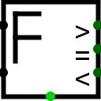

Comparateur à virgule flottante
Comparateur à virgule flottante
| Librairie : | Arithmétique |
| Introduction : | 3.5 |
| Apparence : |  |
Comportement
Ce composant compare deux valeurs à virgule flottante qui arrivent par les entrées ouest et présente trois signaux de sortie > = <. normalement, une seule de ces valeurs est à 1 si une erreur est détectée, toutes les sorties sont à 0 et la sortie d'erreur au sud est à 1 si le composant reçoit un signal d'erreur (E) ou non défini (U) ou les valeurs à virgule flottante NaNf.
Broches
- Bord ouest, extrémité nord
- Entrée : La première valeur en virgule flottante à comparer. La largeur de donnée en bits correspond à la propriété Dimension flottant.
- Bord ouest, extrémité sud
- Entrée : La deuxième valeur en virgule flottante à comparer. La largeur de donnée en bits correspond à la propriété Dimension flottant.
- Bord est : Etiquetée >
- Sortie : 1 si la première entrée est supérieure à la seconde, 0 si la première entrée est inférieure ou égale à la seconde. La largeur du bit est de 1.
- Bord est : Etiquetée =
- Sortie : 1 si la première entrée est égale à la seconde, 0 si la première entrée n'est pas égale à la seconde. La largeur du bit est de 1.
- Bord est : Etiquetée <
- Sortie : 1 si la première entrée est supérieure à la seconde, 0 si la première entrée est inférieure ou égale à la seconde. La largeur du bit est de 1.
- Bord sud
- Sortie : Erreur, prend la valeur 1 si l'additionneur reçoit un signal d'erreur (E), indéfini (U) ou les valeurs en virgule flottante NaNf. La largeur de donnée est de 1.
Attributs
Lorsque le composant est sélectionné ou en cours d'ajout, les touches Alt-0 à Alt-9 modifient son attribut Dimension flottant.
- Dimension flottant
- La largeur de donnée en bit de l'additionneur 32 ou 64 bits.
Comportement de l'outil pousser
None.
Comportement de l'outil texte
None.
Retour à Référence de la bibliothèque